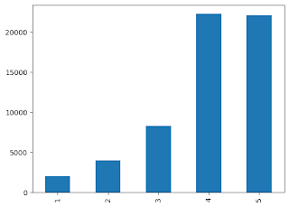
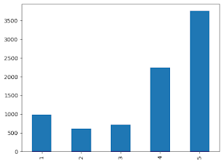
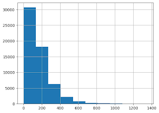
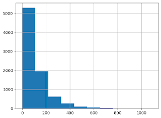

Project Goal
We want to determine and label fake Yelp reviews and then flag users who are creating such reviews.
Project Code
Dataset
We used two datasets, one directly from Yelp (unlabeled), and one that was a smaller subset of the Yelp data which was labeled. The labeled dataset we used is a dataset of restaurants in the Chicago area–there is review, restaurant details, and reviewer data. The review data consisted of each review’s date, review ID, reviewer ID, review content, rating, useful count, cool count, funny count, restaurant ID, and flagged status (N: not flagged, legitimate review; Y: flagged, fake review). The flagged column also contains ‘NR’ and ‘YR’, but we filtered the data to only used the reviews flagged with “N’ or ‘Y’. Before cleaning or filtering this dataset, it contained 788,471 reviews.
Methodology
Exploratory Data Analysis
Before trying to build any models on our dataset, we wanted to explore the data we were working with and clean our data by removing any inconsistencies. First, we separated the dataset into two smaller datasets, one consisting of all of the real reviews and another of all of the fake reviews. We looked at the number of reviews in each of these two datasets. There were 8,303 fake reviews and 58,716 real reviews. This makes sense as a majority of the reviews on Yelp are legitimate. We took this imbalance in our dataset into consideration. We then explored the distribution of rating scores with each of the two datasets. We found that a majority of real reviews had a rating of 4 out of 5 stars then closely followed by 5 out of 5 stars. However, when looking at fake reviews, the majority of these ratings had a 5 out 5 star review and the next most rating, 4 out of 5 stars. Despite having far fewer fake reviews, the difference between the quantity of these two is greater than the in real reviews. Additionally, fake reviews had proportionally more 1 star reviews at 11.81% compared to 3.5% in real reviews.
Bar chart of real reviews' rating distribution
Bar chart of fake reviews' rating distribution
Next, we looked at the content of the reviews. We first used nltk to tokenize the words in the reviews’ content. After tokenization, we created a new column in each of the two data frames and found the count of the number of words in each review. We then found the statistical summaries of the word count columns. Out of the 58,716 real reviews, there was an average of about 167 words per review and a standard deviation of about 141 words. Additionally, the minimum number of words was one, meaning every review had at least one word. Below is a histogram showing the distribution of the different word counts in real reviews.
Histogram of the word count in the content of real reviews
Now looking at the fake reviews, out of the 8,303 fake reviews, there was an average of about 114 words per review and a standard deviation of about 112 words. Additionally, the minimum number of words was zero. Below is a histogram showing the distribution of the different word counts in fake reviews. Most of the reviews are in the first bin of the histogram suggesting that these fake reviews tend to contain fewer words.
Histogram of the word count in the content of fake reviews
Data Cleaning and Formatting
We trained the model using a combination of regression, KNN, and classical neural networks to analyze the other features (i.e. useful count, cool count, funny count) in conjunction with the flag (marking a fake or real review) given by the text analysis model (BERT) to produce a single binary classification flag for the review. AutoGluon would then take all models and cross-train them against each other at each epoch. After completion, we would be given an output model that would be a second-stage evaluation algorithm.
Using Bidirectional Encoder Representations from Transformers (BERT)
We utilized Bidirectional Encoder Representations from Transformers (BERT) to get an initial prediction on the review content (text) alone. We used BERT because it is good for contextual learning. It uses word embeddings to learn the context of the words in the reviews. This means that it is bidirectional and will look to the left and right of each word to understand the context of how words are being used. It can also understand metaphors, which is useful in the context of looking at customer reviews. Specifically, we used the BERT base cased model as this model takes into account capitalization. We chose this model because many reviews use capitalization to emphasize words and this can be taken into account. We had to tokenize the data from the labeled dataset which inserts labels into the review content to show if it’s the start or the end of sentences. We then ran the tokenized review content data with their respective labels into the model to train it. We split the data into training and testing data by utilizing stratified sampling, which divides the dataset into subgroups and samples from each group. This is to maintain the representation of the data since there are more real reviews than there are fake reviews. The length of the training data was 53,615 reviews where 46,973 were real reviews and 6,642 were fake reviews. The length of the test data is 13,404 reviews where 11,661 were real reviews and 1,743 were fake reviews. From both the training and test data, 87% of the datasets were real reviews and 13% were fake. To fine-tune the model, we used an AdamW optimizer to control the weight decays, and linear schedulers to make the learning rate dynamic. In the beginning, we used 3 epochs with a learning rate of 2e-5, batch size of 32, and warmup_steps of 500 steps to reduce the learning rate in the beginning to not significantly impact the training. After training the BERT model, the training accuracy was 87%. The testing results can be seen in our results section.
AutoGluon
We trained the model using a combination of regression, KNN, and classical neural networks to analyze the other features (i.e. useful count, cool count, funny count) in conjunction with the flag (marking a fake or real review) given by the text analysis model (BERT) to produce a single binary classification flag for the review. AutoGluon would then take all models and cross-train them against each other at each epoch. After completion, we would be given an output model that would be a second-stage evaluation algorithm.